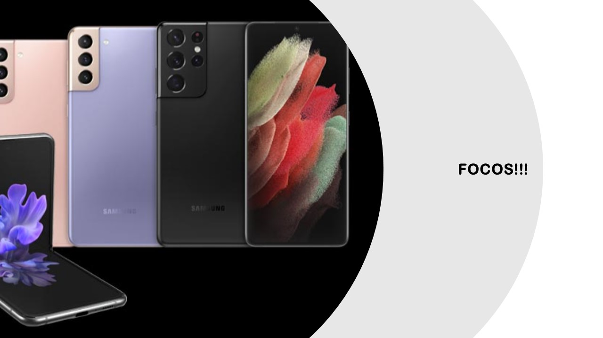
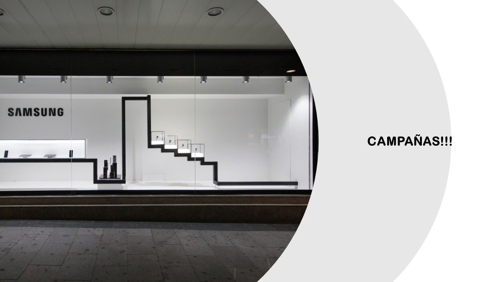
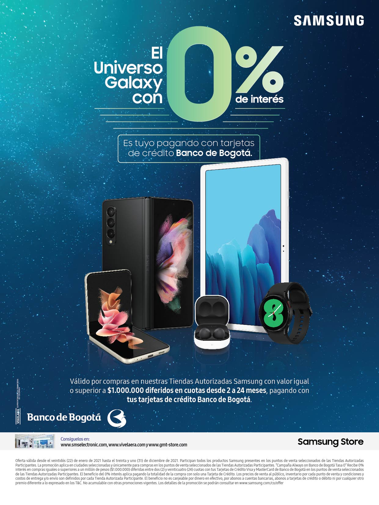
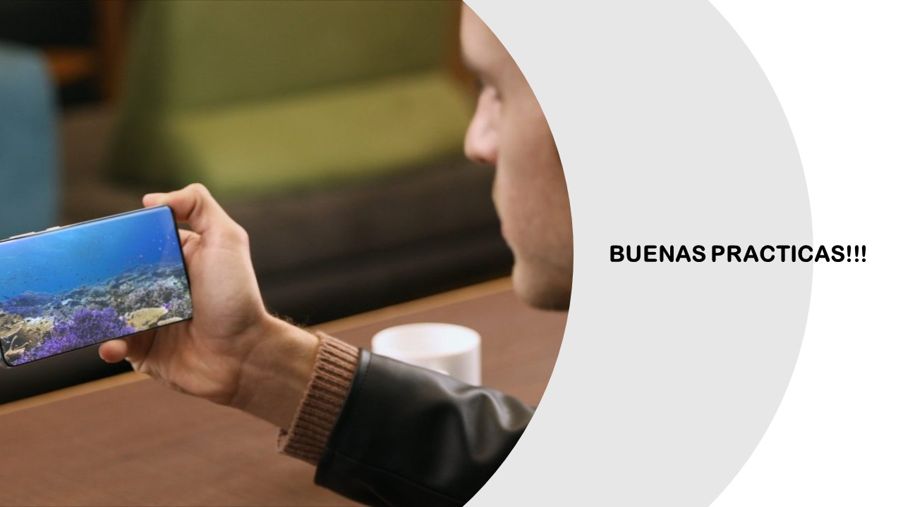
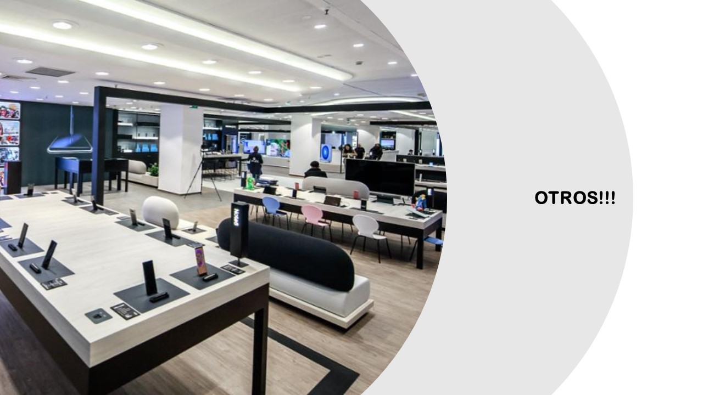
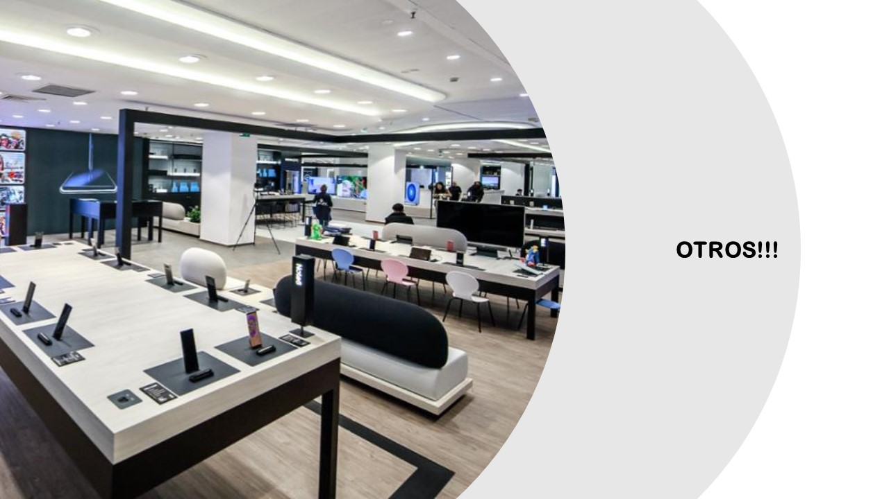

UN ESPACIO PARA NOSOTROS!
Este es un espacio desarrollado por el equipo de supervisores y coordinación, con la finalidad de ayudar en la comunicación y acompañamiento al equipo de consultoría. (no es pagina oficial)
Encontraras varias secciones de información!!!
índice
Recuerda hacer uso de la herramienta Samsung plus, con tu usuario puedes estar al día de la información acerca de nuestros productos y tips de venta; te dejamos a continuación el enlace!!!

Ir a canal de Samsung colombia Youtube
____________________________________________________

Los productos focos, se identifican como aquellos que deben tener prioridad en rotación; la acción desde nuestra labor, es trabajar en nuestros speech de venta enfocado a estos productos.
En tu punto de venta también puedes hacer el ejercicio de identificar tus productos foco para tenerlos presente, usa el número de semanas de inventario.
A continuación anexamos los generales:
- Wearables
- Watch series Active 2: R820, R830
- Buds pro, Buds 2
- Tabs
- Tab a7 de 32gb y de 64gb (T500)
- Mobile
- A12
- S21 256gb
- S21 Ultra
- S20 Fe
____________________________________________________

Tenemos campañas activas para nuestros clientes, no olvides mencionarlas en el proceso de la venta, son puntos que nos ayudan a fidelizar clientes.
- Always On
- Por compras superiores a 1 millón, 0% de interés pagando con tarjetas de crédito seleccionadas
-

- A12
-

____________________________________________________

- Buenas prácticas
- HERNANDO PALACIOS HERRERA
- consultor mas participativo de fotografías ideales


- Felicitaciones Especiales por ventas de referencias foco
- RAIZA OROZCO HENRIQUEZ
- venta S21 Ultra

- REINALDO DE LA HOZ YUDEX
- venta Buds pro

- JOSE GUZMAN GAMARRA
- venta tab s7

- JHON SUAREZ PERDOMO
- venta Note 20

- JHONATAN SALAZAR ABRIL
- venta S20FE

- Felicitaciones a las ventas múltiples
- DIANA HENAO MORALES
- Venta de Note 20

- DINA ORTEGA GAVIRIA
- Venta de S21 Ultra

____________________________________________________

Cuéntanos tu opinión!!!
Tus comentarios y sugerencias nos ayudan a mejorar nuestra herramienta
ir a link
- Buenas prácticas
- HERNANDO PALACIOS HERRERA
- consultor mas participativo de fotografías ideales
- Felicitaciones Especiales por ventas de referencias foco
- RAIZA OROZCO HENRIQUEZ
- venta S21 Ultra
- REINALDO DE LA HOZ YUDEX
- venta Buds pro
- JOSE GUZMAN GAMARRA
- venta tab s7
- JHON SUAREZ PERDOMO
- venta Note 20
- JHONATAN SALAZAR ABRIL
- venta S20FE
- Felicitaciones a las ventas múltiples
- DIANA HENAO MORALES
- Venta de Note 20
- DINA ORTEGA GAVIRIA
- Venta de S21 Ultra
____________________________________________________

Cuéntanos tu opinión!!!
Tus comentarios y sugerencias nos ayudan a mejorar nuestra herramienta
ir a link
Cuéntanos tu opinión!!! Tus comentarios y sugerencias nos ayudan a mejorar nuestra herramienta ir a link